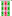

（３３）Banboo Bomb
４人全員が役満の聴牌をした。全員が索子待ちで、から まで何が出ても誰かの役満のアガリとなる。しかし待ち牌は１枚も重複していない。また全員のアガリ牌のうち、少なくとも１枚は山に残っている。このような手の一例を示してほしい。 (by Enew)
Mahjan riddles 牌謎。
（３３）Banboo Bomb
４人全員が役満の聴牌をした。全員が索子待ちで、
解答